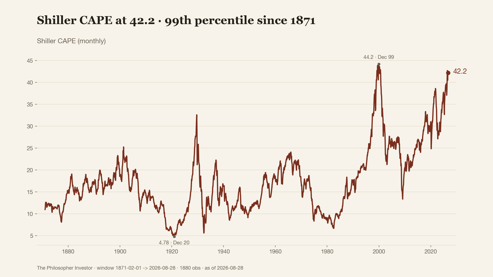
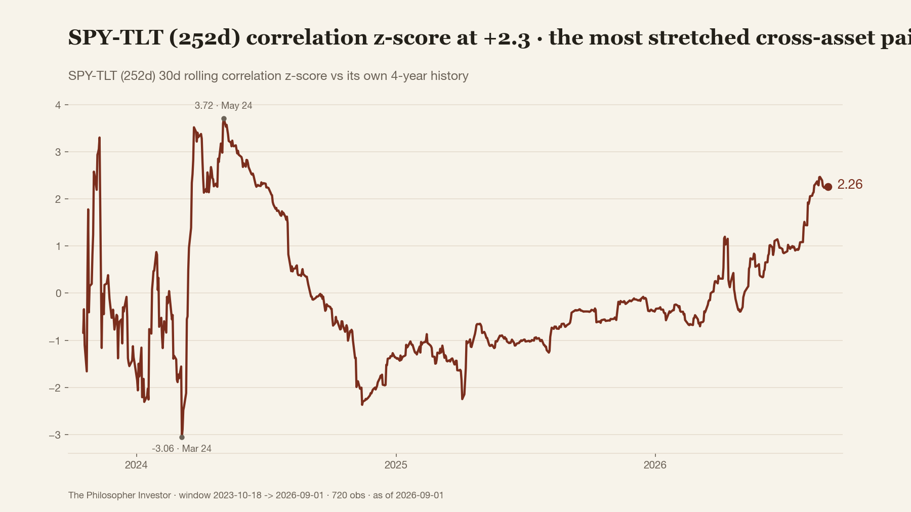
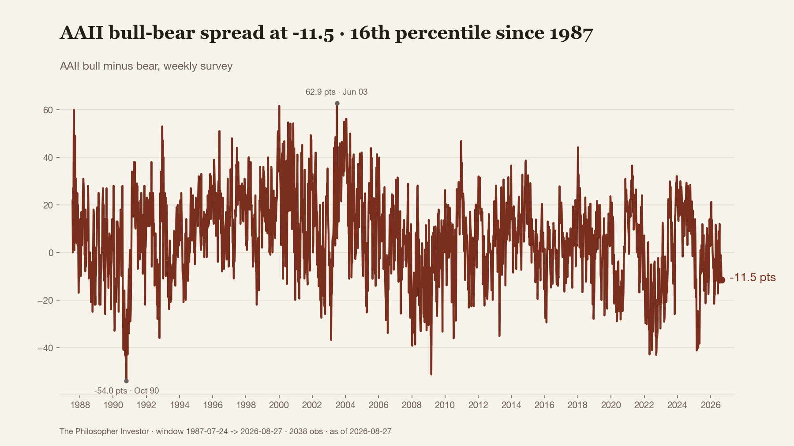
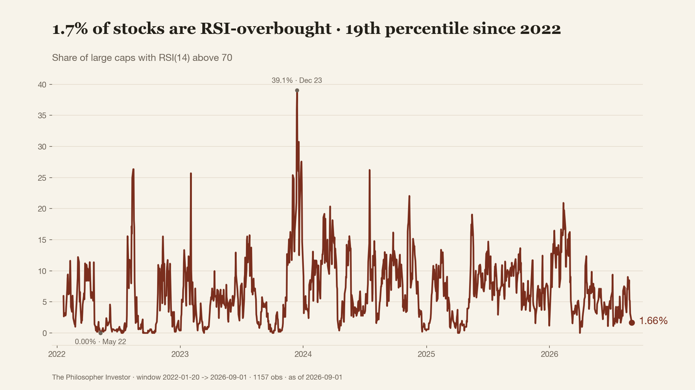
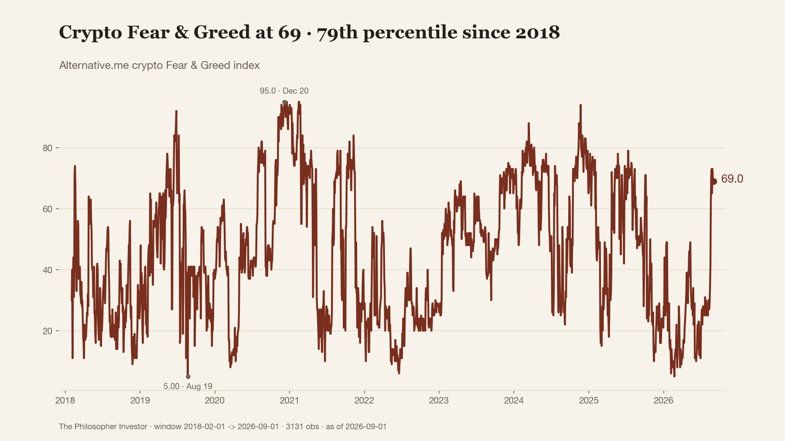
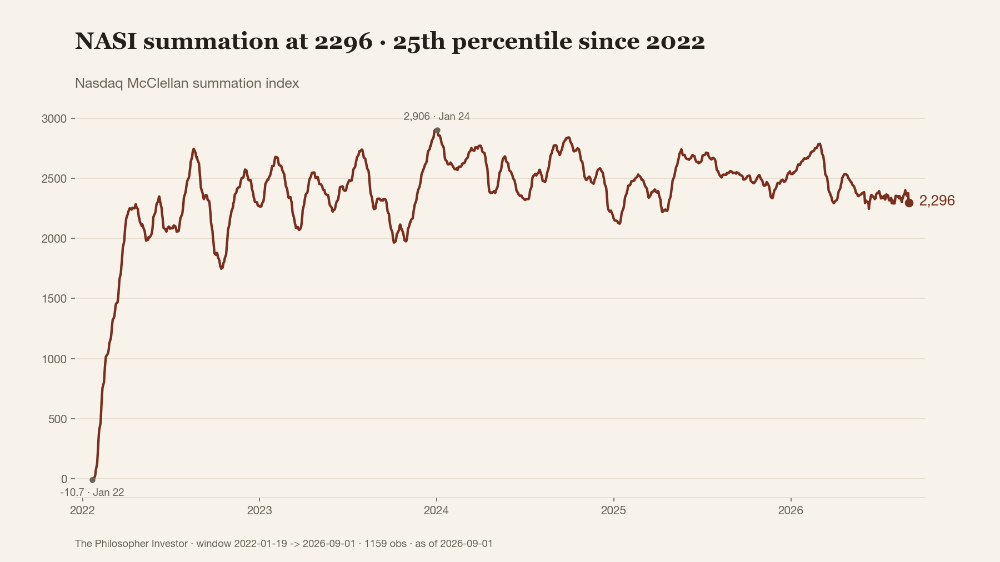
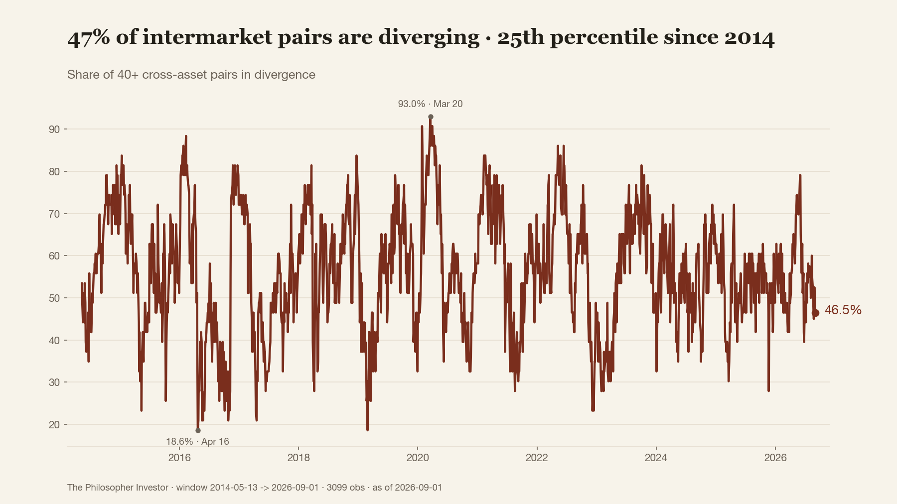
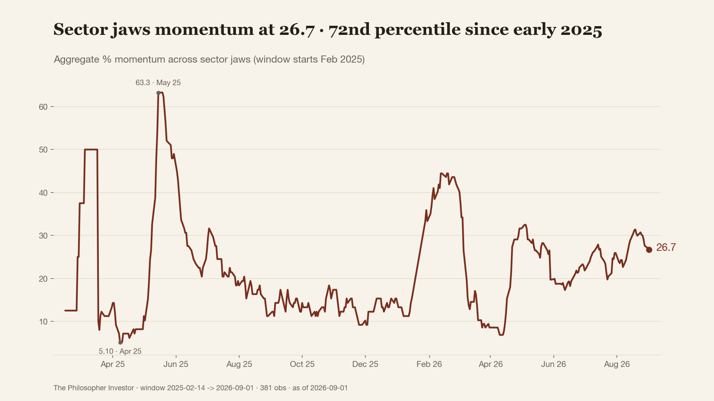

8 candidates · data through 2026-09-01
3 · Le spread AAII tombe à -11,5, le 16e centile depuis 1987, alors que l'indice est à 2,1 % de son record. Statut : descriptif, aucun claim d'edge.
4 · Seulement 1,7 % des actions sont en surachat RSI, 19e centile depuis 2022. Le haut est proche, la poussée est mince. Milieu de plage, donc contexte.
6 · NASI à 2296, 25e centile depuis 2022, loin du pic de 2906. Le moteur interne tourne au ralenti. Description, rien d'autre.
1 · CAPE à 42,2, 99e centile depuis 1871, juste sous le sommet de 44,2 de décembre 1999. Contexte de valorisation, jamais un signal de timing.
2 · La corrélation SPY-TLT sur 252 jours est à +2,3 écarts-types, 88e centile. Actions et obligations respirent ensemble. Zéro lecture directionnelle.
Dropped: 5 7 8







